Misión
Conectar a estudiantes y docentes de distintas universidades, con profesionales e instituciones, para que las ideas y proyectos de inteligencia artificial se validen con rigor, crezcan y lleguen a la sociedad.

Etapa inicial · Santa Cruz de la Sierra, Bolivia
Joint Academic Development in Artificial Intelligence Desarrollo Académico Conjunto en Inteligencia Artificial
Tu idea de IA,
validada en conjunto.
La red de estudiantes y docentes de distintas universidades que se ayudan a validar y hacer crecer proyectos de inteligencia artificial.
Qué es
Que ninguna buena idea de IA en Bolivia se quede sola.
JADAI reúne a estudiantes y docentes de distintas universidades para que un proyecto de inteligencia artificial no dependa de una sola carrera ni de una sola persona. Es una comunidad estudiantil, académica y sin fines de lucro. Nace en Santa Cruz de la Sierra y busca llegar al resto de Bolivia.
En el nombre, «conjunto» —Joint— es la idea central: se trabaja entre varios, nunca solo.
Conectar a estudiantes y docentes de distintas universidades, con profesionales e instituciones, para que las ideas y proyectos de inteligencia artificial se validen con rigor, crezcan y lleguen a la sociedad.
Si tienes una idea de IA, te conectamos con quienes pueden ayudarte a validarla y hacerla crecer.
A los estudiantes. Docentes, embajadores y aliados hacen posible que la red funcione. Cualquier universidad y cualquier nivel: nadie necesita ser experto para entrar.
Queremos ser, con el tiempo, la red académica de IA de referencia en Bolivia: universidades con carreras de IA unidas en una red de la que salgan talento, investigación y oportunidades para la juventud.
Por confirmar El año 2030 se mencionó como horizonte posible. No es una meta comprometida.
JADAI está en una etapa inicial y todavía no tiene personería jurídica. Por eso esta página dice qué hacemos, qué no hacemos y qué aún no existe.
Cómo trabajamos
Qué hacemos
Cada pilar existe para que la red funcione mejor. Ninguno reemplaza lo que JADAI no es: ni una escuela, ni un laboratorio, ni un patrocinador.
01 · Núcleo
Es el servicio central: recibe ideas y las conecta con quienes pueden validarlas. La revisión la hacen docentes y pares, y el resultado es una devolución escrita. El formulario en línea y el seguimiento con estados todavía se están armando. Hoy el primer paso es escribirnos.
Sirve para encontrar proyectos y gente fuera de los círculos propios. En eventos de otras comunidades, JADAI puede participar como aliado comunitario: aporta personas, mentores, jurados y difusión. No es un patrocinador.
La columna vertebral de una red entre universidades: una cara en cada campus. Buscamos al menos una persona por universidad, que traiga proyectos y docentes y represente a JADAI en su campus.
Para acercar la inteligencia artificial al público y, más adelante, mostrar los proyectos que la red ayudó a madurar. Los eventos propios todavía no están en marcha.
Para abrir puertas en universidades, en la Alcaldía, en la Gobernación y en empresas: acuerdos que den acceso a docentes, espacios y reconocimiento. Aún no hay alianzas firmadas. Este pilar describe la dirección, no convenios vigentes.
Somos una comunidad estudiantil, académica y sin fines de lucro. Una red entre universidades, neutral frente a empresas y plataformas, y un aliado comunitario.
No somos un patrocinador, una empresa de eventos, la voz oficial de una universidad, un laboratorio de investigación ni una escuela. No competimos con otras comunidades.
Validación
Validar un proyecto en JADAI es darle una revisión académica breve y honesta. La hacen al menos un docente y un par de otra universidad. El par es alguien que revisa el trabajo desde fuera de la universidad de origen.
El resultado es una devolución escrita corta, con próximos pasos. Esta es la definición de trabajo con la que arrancamos; se puede afinar. El límite de abajo no se afina: no es un certificado.
Límite claro
No es una certificación oficial ni un aval de una universidad.
JADAI no certifica proyectos y no habla en nombre de ninguna casa de estudios. La revisión es una devolución de la red, nada más.
Quiénes la iniciaron
Dos fundadores, desde Santa Cruz de la Sierra.
Licenciatura en Innovación Digital e Inteligencia Artificial
Universidad Central de Bolivia (UNICEN)
Ingeniería en Inteligencia Artificial
Universidad Católica Boliviana (UCB)
Participa
Esto es lo que la red quiere ofrecer. Estamos en el inicio: cada persona que se suma ayuda a hacerlo posible.
Principal
Si estudias en cualquier universidad y en cualquier nivel, puedes traer una idea. No hace falta ser experto.
Criterio académico
La validación solo existe si hay docentes dispuestos a revisar. Sin eso, JADAI no promete lo que no puede cumplir.
Una cara por campus
Buscamos al menos una persona por universidad. Trae proyectos y docentes de su campus y representa a JADAI ahí. Puede ser estudiante o docente. Todavía no hay una red de embajadores formada: este es el lugar para empezar.
Quiero ser embajador en mi campusSin convenios firmados
Para profesionales, instituciones, empresas y otras comunidades. Un profesional puede aportar mentoría y conexiones. Una institución puede abrir espacios, reconocimiento o problemas reales. Otra comunidad puede invitar a JADAI como aliado comunitario —personas, difusión o mentoría—, no como patrocinador. Cuando haya eventos, también habrá lugar para participar.
Aún no hay alianzas firmadas.
ConversemosContacto
Cuéntanos el problema, para quién es, cómo piensas abordarlo, con qué datos y recursos cuentas, y cómo cuidarías el uso de la IA. Con eso se puede ver si cabe una revisión.
También puedes escribir si quieres sumarte como estudiante, docente, embajador o aliado.
Estos datos todavía no están definidos. Cada campo dice «Por completar» a propósito: no hay correos ni enlaces inventados. Cuando existan, se reemplazan aquí. Si una red no se va a usar, se borra esa fila.
Puedes copiar este borrador y guardarlo. Todavía no se envía a ningún lado.